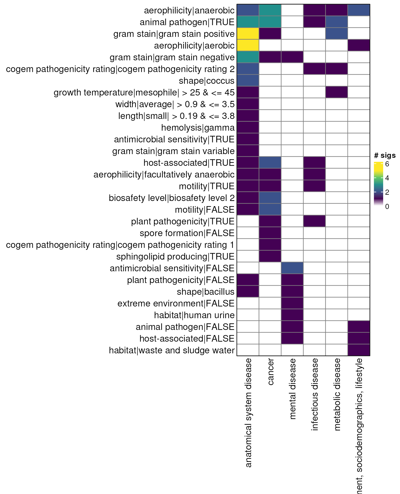

library(bugphyzzAnalyses)
library(bugphyzz)
library(bugsigdbr)
library(dplyr)
#>
#> Attaching package: 'dplyr'
#> The following objects are masked from 'package:stats':
#>
#> filter, lag
#> The following objects are masked from 'package:base':
#>
#> intersect, setdiff, setequal, union
library(purrr)
library(tidyr)
library(ComplexHeatmap)
#> Loading required package: grid
#> ========================================
#> ComplexHeatmap version 2.18.0
#> Bioconductor page: http://bioconductor.org/packages/ComplexHeatmap/
#> Github page: https://github.com/jokergoo/ComplexHeatmap
#> Documentation: http://jokergoo.github.io/ComplexHeatmap-reference
#>
#> If you use it in published research, please cite either one:
#> - Gu, Z. Complex Heatmap Visualization. iMeta 2022.
#> - Gu, Z. Complex heatmaps reveal patterns and correlations in multidimensional
#> genomic data. Bioinformatics 2016.
#>
#>
#> The new InteractiveComplexHeatmap package can directly export static
#> complex heatmaps into an interactive Shiny app with zero effort. Have a try!
#>
#> This message can be suppressed by:
#> suppressPackageStartupMessages(library(ComplexHeatmap))
#> ========================================
bp <- importBugphyzz()
bp_sigs_gn <- map(bp, ~ {
makeSignatures(
dat = .x, tax_id_type = "NCBI_ID", tax_level = "genus", min_size = 5
)
}) |>
list_flatten(name_spec = "{inner}") |>
discard(is.null) |>
map(as.character)
bp_sigs_sp <- map(bp, ~ {
makeSignatures(
dat = .x, tax_id_type = "NCBI_ID", tax_level = "species", min_size = 5
)
}) |>
list_flatten(name_spec = "{inner}") |>
discard(is.null) |>
map(as.character)Use “case-control” study design only:
## 10.5281/zenodo.10407666 v1.2.0
## "10.5281/zenodo.6468009" v1.1.0
bsdb <- importBugSigDB(version = "10.5281/zenodo.10407666" , cache = FALSE)
# bsdb <- importBugSigDB(version = "devel" , cache = FALSE)
bsdb <- bsdb |>
filter(`Host species` == "Homo sapiens") |>
filter(!is.na(`Abundance in Group 1`)) |>
filter(!is.na(`Body site`)) |>
filter(`Study design` == "case-control" ) |>
mutate(
`BSDB ID` = paste0(
"bsdb:",
sub("Study ", "", Study), "/",
sub("Experiment ", "", Experiment), "/",
sub("Signature ", "", `Signature page name`)
)
) |>
mutate(
custom_id = paste0(
"bsdb:",
sub("Study ", "", Study), "/",
sub("Experiment ", "", Experiment)
)
) |>
relocate(custom_id, `BSDB ID`)
dim(bsdb)
#> [1] 1416 51Create a list with signature ids (BSDB ID) that have both UP and DOWN outcomes per study:
## Columns that make BSDB ID: Study, Experiment, Signature page name
l <- bsdb |>
select(
Study, Experiment, `Signature page name`, `Abundance in Group 1`
) |>
mutate(
xcol = paste0(`Abundance in Group 1`, " (", `Signature page name`, ")")
) |>
group_by(Study, Experiment) |>
mutate(ycol = sort(paste0(xcol, collapse = "; "))) |>
mutate(n_sig = n()) |>
ungroup() |>
select(-xcol) |>
filter(n_sig == 2) |>
filter(grepl("decreased", ycol), grepl("increased", ycol)) |>
filter(grepl("Signature 1", ycol), grepl("Signature 2", ycol)) |>
mutate(
`BSDB ID` = paste0(
"bsdb:",
sub("Study ", "", Study), "/",
sub("Experiment ", "", Experiment), "/",
sub("Signature ", "", `Signature page name`)
)
) |>
mutate(
custom_id = paste0(
"bsdb:",
sub("Study ", "", Study), "/",
sub("Experiment ", "", Experiment)
)
) |>
relocate(custom_id, `BSDB ID`) |>
{\(y) split(y, y$`Abundance in Group 1`)}() |>
map(~ pull(arrange(.x, custom_id), `BSDB ID`))
map(l, length)
#> $decreased
#> [1] 597
#>
#> $increased
#> [1] 597Create signatures for both decrease and increase at the genus level. Only keep the signature names (stored in a data.frame) that have enough taxa in both increased and decreased sets.
lg <- map(l, ~ {
bsdb |>
filter(`BSDB ID` %in% .x) |>
getSignatures(
tax.id.type = "ncbi", tax.level = "genus", exact.tax.level = FALSE,
min.size = 5
)
})
df_gn_1 <- data.frame(
x = paste0(
sub("/\\d_.*", "", names(lg$decreased)), "---", names(lg$decreased)
)
) |>
separate(col = "x", into = c("custom_id", "sig_down"), sep = "---")
df_gn_2 <- data.frame(
x = paste0(
sub("/\\d_.*", "", names(lg$increased)), "---", names(lg$increased)
)
) |>
separate(col = "x", into = c("custom_id", "sig_up"), sep = "---")
df_gn <- full_join(df_gn_1, df_gn_2, by = "custom_id") |>
drop_na() |>
mutate(
check = sub("bsdb:\\d+/\\d+/\\d+_(.*)_UP", "\\1", sig_up) ==
sub("bsdb:\\d+/\\d+/\\d+_(.*)_DOWN", "\\1", sig_down)
)
dim(df_gn)
#> [1] 171 4Create signatures for both decrease and increase at the species level. Only keep the signature names (stored in a data.frame) that have enough taxa in both increased and decreased sets.
ls <- map(l, ~ {
bsdb |>
filter(`BSDB ID` %in% .x) |>
getSignatures(
tax.id.type = "ncbi", tax.level = "species",
exact.tax.level = FALSE, min.size = 5
)
})
df_sp_1 <- data.frame(
x = paste0(
sub("/\\d_.*", "", names(ls$decreased)), "---", names(ls$decreased)
)
) |>
separate(col = "x", into = c("custom_id", "sig_down"), sep = "---")
df_sp_2 <- data.frame(
x = paste0(
sub("/\\d_.*", "", names(ls$increased)), "---", names(ls$increased)
)
) |>
separate(col = "x", into = c("custom_id", "sig_up"), sep = "---")
df_sp <- full_join(df_sp_1, df_sp_2, by = "custom_id") |>
drop_na() |>
mutate(
check = sub("bsdb:\\d+/\\d+/\\d+_(.*)_UP", "\\1", sig_up) ==
sub("bsdb:\\d+/\\d+/\\d+_(.*)_DOWN", "\\1", sig_down)
)
dim(df_sp)
#> [1] 52 4
or <- function(x, y, s) {
a <- sum(x %in% s)
b <- sum(!x %in% s)
c <- sum(y %in% s)
d <- sum(!y %in% s)
ct <- matrix(
data = c(a, b, c, d), byrow = TRUE, nrow = 2, ncol = 2,
dimnames = list(exposure = c("yes", "no"), event = c("yes", "no"))
)
if (any(ct == 0)) {
HA <- "*"
suppressWarnings({
res <- epitools::oddsratio.wald(ct + 0.5)$measure[2,]
})
} else {
HA <- ""
suppressWarnings({
res <- epitools::oddsratio.wald(ct)$measure[2,]
})
}
DF <- data.frame(
odds_ratio = round(res["estimate"], 2),
lower_ci = round(res["lower"], 2),
upper_ci = round(res["upper"], 2),
HA = HA,
up_annotated = a,
up_noAnnotated = b,
down_annotated = c,
down_noAnnotated = d
)
return(DF)
}
fname <- system.file(
'extdata', 'condition2category.tsv', package = 'bugphyzzAnalyses',
mustWork = TRUE
)
cond2cat <- read.table(fname, header = TRUE, sep = '\t')
gn <- vector("list", length(sigs_list_gn$up) * length(bp_sigs_gn))
counter <- 1
for (i in seq_along(sigs_list_gn$up)) {
for(j in seq_along(bp_sigs_gn)) {
odds_ratio <- or(
x = sigs_list_gn$up[[i]],
y = sigs_list_gn$down[[i]],
s = bp_sigs_gn[[j]]
)
names(gn)[counter] <- paste0(
names(sigs_list_gn$up)[i], "---", names(bp_sigs_gn)[j], "---genus"
)
gn[[counter]] <- odds_ratio
counter <- counter + 1
}
}
gn_df <- gn |>
bind_rows(.id = "name") |>
separate(
col = "name", into = c("bsdb_sig", "bp_sig", "rank"), sep = "---"
) |>
mutate(
`BSDB ID` = sub("^(bsdb:\\d+/\\d+/\\d+)_.*$", "\\1", bsdb_sig),
bp_sig = sub("^bugphyzz:(.*)$", "\\1", bp_sig)
) |>
left_join(select(bsdb, `BSDB ID`, Condition), by = "BSDB ID") |>
relocate(`BSDB ID`, Condition) |>
relocate(bsdb_sig, .after = down_noAnnotated) |>
filter(odds_ratio > 1, lower_ci > 1) |>
arrange(-odds_ratio) |>
mutate(Condition = tolower(Condition)) |>
left_join(cond2cat, by = "Condition") |>
relocate(Category, .after = `BSDB ID`) |>
filter(!is.na(Category))
dim(gn_df)
#> [1] 67 14
myDataTable(gn_df, nrow(gn_df))
gn_mat <- gn_df |>
count(Category, bp_sig) |>
pivot_wider(
names_from = "Category", values_from = "n", values_fill = 0
) |>
tibble::column_to_rownames(var = "bp_sig") |>
as.matrix()
color_fun <- function(x) {
circlize::colorRamp2(
breaks = c(0, seq(1, max(x))),
colors = c("white", viridis::viridis(max(x)))
)
}
gn_hp <- Heatmap(
matrix = gn_mat,
col = color_fun(gn_mat),
border = TRUE,
show_row_dend = FALSE, show_column_dend = FALSE,
row_names_side = "left",
name = "# sigs",
rect_gp = gpar(col = "gray50", lwd = 1),
row_names_max_width = max_text_width(
rownames(gn_mat),
gp = gpar(fontsize = 12)
),
)
gn_hp
sp <- vector("list", length(sigs_list_sp$up) * length(bp_sigs_sp))
counter <- 1
for (i in seq_along(sigs_list_sp$up)) {
for(j in seq_along(bp_sigs_sp)) {
odds_ratio <- or(
x = sigs_list_sp$up[[i]],
y = sigs_list_sp$down[[i]],
s = bp_sigs_sp[[j]]
)
names(sp)[counter] <- paste0(
names(sigs_list_sp$up)[i], "---", names(bp_sigs_sp)[j], "---species"
)
sp[[counter]] <- odds_ratio
counter <- counter + 1
}
}
sp_df <- sp |>
bind_rows(.id = "name") |>
separate(
col = "name", into = c("bsdb_sig", "bp_sig", "rank"), sep = "---"
) |>
mutate(
`BSDB ID` = sub("^(bsdb:\\d+/\\d+/\\d+)_.*$", "\\1", bsdb_sig),
bp_sig = sub("^bugphyzz:(.*)$", "\\1", bp_sig)
) |>
left_join(select(bsdb, `BSDB ID`, Condition), by = "BSDB ID") |>
relocate(`BSDB ID`, Condition) |>
relocate(bsdb_sig, .after = down_noAnnotated) |>
filter(odds_ratio > 1, lower_ci > 1) |>
arrange(-odds_ratio) |>
mutate(Condition = tolower(Condition)) |>
left_join(cond2cat, by = "Condition") |>
relocate(Category, .after = `BSDB ID`) |>
filter(!is.na(Category))
dim(sp_df)
#> [1] 55 14
myDataTable(sp_df, nrow(sp_df))
sp_mat <- sp_df |>
count(Category, bp_sig) |>
pivot_wider(
names_from = "Category", values_from = "n", values_fill = 0
) |>
tibble::column_to_rownames(var = "bp_sig") |>
as.matrix()
sp_hp <- Heatmap(
matrix = sp_mat,
col = color_fun(sp_mat),
border = TRUE,
show_row_dend = FALSE, show_column_dend = FALSE,
row_names_side = "left",
name = "# sigs",
rect_gp = gpar(col = "gray50", lwd = 1),
row_names_max_width = max_text_width(
rownames(sp_mat),
gp = gpar(fontsize = 12)
),
)
sp_hp
sessioninfo::session_info()
#> ─ Session info ───────────────────────────────────────────────────────────────
#> setting value
#> version R version 4.3.2 (2023-10-31)
#> os Ubuntu 22.04.3 LTS
#> system x86_64, linux-gnu
#> ui X11
#> language en
#> collate en_US.UTF-8
#> ctype en_US.UTF-8
#> tz Etc/UTC
#> date 2024-02-01
#> pandoc 3.1.1 @ /usr/local/bin/ (via rmarkdown)
#>
#> ─ Packages ───────────────────────────────────────────────────────────────────
#> package * version date (UTC) lib source
#> BiocFileCache 2.10.1 2023-10-26 [1] Bioconductor
#> BiocGenerics 0.48.1 2023-11-01 [1] Bioconductor
#> bit 4.0.5 2022-11-15 [1] RSPM (R 4.3.0)
#> bit64 4.0.5 2020-08-30 [1] RSPM (R 4.3.0)
#> blob 1.2.4 2023-03-17 [1] RSPM (R 4.3.0)
#> bold 1.3.0 2023-05-02 [1] RSPM (R 4.3.0)
#> bslib 0.6.1 2023-11-28 [1] RSPM (R 4.3.0)
#> bugphyzz * 0.0.1.4 2024-02-01 [1] Github (waldronlab/bugphyzz@47ba4db)
#> bugphyzzAnalyses * 0.1.0 2024-02-01 [1] local
#> bugsigdbr * 1.8.1 2023-10-29 [1] Bioconductor
#> cachem 1.0.8 2023-05-01 [1] RSPM (R 4.3.0)
#> Cairo 1.6-2 2023-11-28 [1] RSPM (R 4.3.0)
#> circlize 0.4.15 2022-05-10 [1] RSPM (R 4.3.0)
#> cli 3.6.2 2023-12-11 [1] RSPM (R 4.3.0)
#> clue 0.3-65 2023-09-23 [1] RSPM (R 4.3.0)
#> cluster 2.1.4 2022-08-22 [2] CRAN (R 4.3.2)
#> codetools 0.2-19 2023-02-01 [2] CRAN (R 4.3.2)
#> colorspace 2.1-0 2023-01-23 [1] RSPM (R 4.3.0)
#> ComplexHeatmap * 2.18.0 2023-10-24 [1] Bioconductor
#> conditionz 0.1.0 2019-04-24 [1] RSPM (R 4.3.0)
#> crayon 1.5.2 2022-09-29 [1] RSPM (R 4.3.0)
#> crosstalk 1.2.1 2023-11-23 [1] RSPM (R 4.3.0)
#> crul 1.4.0 2023-05-17 [1] RSPM (R 4.3.0)
#> curl 5.2.0 2023-12-08 [1] RSPM (R 4.3.0)
#> data.table 1.15.0 2024-01-30 [1] RSPM (R 4.3.0)
#> DBI 1.2.1 2024-01-12 [1] RSPM (R 4.3.0)
#> dbplyr 2.4.0 2023-10-26 [1] RSPM (R 4.3.0)
#> desc 1.4.3 2023-12-10 [1] RSPM (R 4.3.0)
#> digest 0.6.34 2024-01-11 [1] RSPM (R 4.3.0)
#> doParallel 1.0.17 2022-02-07 [1] RSPM (R 4.3.0)
#> dplyr * 1.1.4 2023-11-17 [1] RSPM (R 4.3.0)
#> DT 0.31 2023-12-09 [1] RSPM (R 4.3.0)
#> ellipsis 0.3.2 2021-04-29 [1] RSPM (R 4.3.0)
#> epitools 0.5-10.1 2020-03-22 [1] RSPM (R 4.3.0)
#> evaluate 0.23 2023-11-01 [1] RSPM (R 4.3.0)
#> fansi 1.0.6 2023-12-08 [1] RSPM (R 4.3.0)
#> fastmap 1.1.1 2023-02-24 [1] RSPM (R 4.3.0)
#> filelock 1.0.3 2023-12-11 [1] RSPM (R 4.3.0)
#> foreach 1.5.2 2022-02-02 [1] RSPM (R 4.3.0)
#> fs 1.6.3 2023-07-20 [1] RSPM (R 4.3.0)
#> generics 0.1.3 2022-07-05 [1] RSPM (R 4.3.0)
#> GetoptLong 1.0.5 2020-12-15 [1] RSPM (R 4.3.0)
#> ggplot2 3.4.4 2023-10-12 [1] RSPM (R 4.3.0)
#> GlobalOptions 0.1.2 2020-06-10 [1] RSPM (R 4.3.0)
#> glue 1.7.0 2024-01-09 [1] RSPM (R 4.3.0)
#> gridExtra 2.3 2017-09-09 [1] RSPM (R 4.3.0)
#> gtable 0.3.4 2023-08-21 [1] RSPM (R 4.3.0)
#> highr 0.10 2022-12-22 [1] RSPM (R 4.3.0)
#> hoardr 0.5.4 2024-01-23 [1] RSPM (R 4.3.0)
#> htmltools 0.5.7 2023-11-03 [1] RSPM (R 4.3.0)
#> htmlwidgets 1.6.4 2023-12-06 [1] RSPM (R 4.3.0)
#> httpcode 0.3.0 2020-04-10 [1] RSPM (R 4.3.0)
#> httr 1.4.7 2023-08-15 [1] RSPM (R 4.3.0)
#> IRanges 2.36.0 2023-10-24 [1] Bioconductor
#> iterators 1.0.14 2022-02-05 [1] RSPM (R 4.3.0)
#> jquerylib 0.1.4 2021-04-26 [1] RSPM (R 4.3.0)
#> jsonlite 1.8.8 2023-12-04 [1] RSPM (R 4.3.0)
#> knitr 1.45 2023-10-30 [1] RSPM (R 4.3.0)
#> lifecycle 1.0.4 2023-11-07 [1] RSPM (R 4.3.0)
#> magrittr 2.0.3 2022-03-30 [1] RSPM (R 4.3.0)
#> matrixStats 1.2.0 2023-12-11 [1] RSPM (R 4.3.0)
#> memoise 2.0.1 2021-11-26 [1] RSPM (R 4.3.0)
#> munsell 0.5.0 2018-06-12 [1] RSPM (R 4.3.0)
#> pillar 1.9.0 2023-03-22 [1] RSPM (R 4.3.0)
#> pkgconfig 2.0.3 2019-09-22 [1] RSPM (R 4.3.0)
#> pkgdown 2.0.7 2022-12-14 [1] RSPM (R 4.3.0)
#> png 0.1-8 2022-11-29 [1] RSPM (R 4.3.0)
#> purrr * 1.0.2 2023-08-10 [1] RSPM (R 4.3.0)
#> R6 2.5.1 2021-08-19 [1] RSPM (R 4.3.0)
#> ragg 1.2.7 2023-12-11 [1] RSPM (R 4.3.0)
#> rappdirs 0.3.3 2021-01-31 [1] RSPM (R 4.3.0)
#> RColorBrewer 1.1-3 2022-04-03 [1] RSPM (R 4.3.0)
#> rjson 0.2.21 2022-01-09 [1] RSPM (R 4.3.0)
#> rlang 1.1.3 2024-01-10 [1] RSPM (R 4.3.0)
#> rmarkdown 2.25 2023-09-18 [1] RSPM (R 4.3.0)
#> RSQLite 2.3.5 2024-01-21 [1] RSPM (R 4.3.0)
#> S4Vectors 0.40.2 2023-11-23 [1] Bioconductor 3.18 (R 4.3.2)
#> sass 0.4.8 2023-12-06 [1] RSPM (R 4.3.0)
#> scales 1.3.0 2023-11-28 [1] RSPM (R 4.3.0)
#> sessioninfo 1.2.2 2021-12-06 [1] RSPM (R 4.3.0)
#> shape 1.4.6 2021-05-19 [1] RSPM (R 4.3.0)
#> stringi 1.8.3 2023-12-11 [1] RSPM (R 4.3.0)
#> stringr 1.5.1 2023-11-14 [1] RSPM (R 4.3.0)
#> systemfonts 1.0.5 2023-10-09 [1] RSPM (R 4.3.0)
#> taxa 0.4.2 2022-04-12 [1] RSPM (R 4.3.0)
#> taxize 1.0 2024-02-01 [1] Github (ropensci/taxize@bcff2a6)
#> taxizedb 0.3.1 2023-04-03 [1] RSPM (R 4.3.0)
#> textshaping 0.3.7 2023-10-09 [1] RSPM (R 4.3.0)
#> tibble 3.2.1 2023-03-20 [1] RSPM (R 4.3.0)
#> tidyr * 1.3.1 2024-01-24 [1] RSPM (R 4.3.0)
#> tidyselect 1.2.0 2022-10-10 [1] RSPM (R 4.3.0)
#> utf8 1.2.4 2023-10-22 [1] RSPM (R 4.3.0)
#> uuid 1.2-0 2024-01-14 [1] RSPM (R 4.3.0)
#> vctrs 0.6.5 2023-12-01 [1] RSPM (R 4.3.0)
#> viridis 0.6.5 2024-01-29 [1] RSPM (R 4.3.0)
#> viridisLite 0.4.2 2023-05-02 [1] RSPM (R 4.3.0)
#> withr 3.0.0 2024-01-16 [1] RSPM (R 4.3.0)
#> xfun 0.41 2023-11-01 [1] RSPM (R 4.3.0)
#> xml2 1.3.6 2023-12-04 [1] RSPM (R 4.3.0)
#> yaml 2.3.8 2023-12-11 [1] RSPM (R 4.3.0)
#>
#> [1] /usr/local/lib/R/site-library
#> [2] /usr/local/lib/R/library
#>
#> ──────────────────────────────────────────────────────────────────────────────